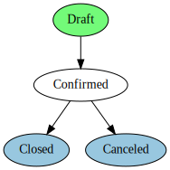
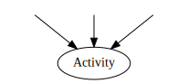

In Odoo, a workflow is a technical artefact to manage a set of "things to do" associated to the records of a model. The workflow provides a higher-level way to organize tasks to perform with or on a record.
More specifically, a workflow is a directed graph where the nodes are called "activities" and the arcs are called "transitions".
- Activities define work that should be done within the Odoo server, such as changing the state of some records, or sending emails.
- Transitions control how the workflow progresses from activity to activity.
In the definition of a workflow, one can attach conditions, signals, and triggers to transitions, so that the behavior of the workflow depends on user actions (such as clicking on a button), changes to records, or arbitrary Python code.
All in all, Odoo's workflow system provides:
- a description of the evolution of a record (document) over time
- automatic actions based on various and flexible conditions
- management of company roles and validation steps
- management of interactions between objects
- a visual representation of document flows through their lifecycle
For instance, a basic order could have the following flow:
Orders start in the Draft state, can be Confirmed by a user, and then either shipped (Closed) or Canceled.
A company using Odoo may want to add discount support to orders, where sales staff has discretionary discounting powers up to 15%, but manager validation is required for discounts beyond 15%. The workflow can be altered online to add the relevant steps without editing Python or XML files:

Because Activities can perform arbitrary actions, the Validation can automatically send a validation request to the relevant employee.
Note
the order view needs to be modified to add an Accept Discount button for managers
Basics
Defining a workflow with data files is straightforward: a record "workflow" is given together with records for the activities and the transitions. For instance, here is a simple sequence of two activities defined in XML
<record id="test_workflow" model="workflow">
<field name="name">test.workflow</field>
<field name="osv">test.workflow.model</field>
<field name="on_create">True</field>
</record>
<record id="activity_a" model="workflow.activity">
<field name="wkf_id" ref="test_workflow"/>
<field name="flow_start">True</field>
<field name="name">a</field>
<field name="kind">function</field>
<field name="action">print_a()</field>
</record>
<record id="activity_b" model="workflow.activity">
<field name="wkf_id" ref="test_workflow"/>
<field name="flow_stop">True</field>
<field name="name">b</field>
<field name="kind">function</field>
<field name="action">print_b()</field>
</record>
<record id="trans_a_b" model="workflow.transition">
<field name="act_from" ref="activity_a"/>
<field name="act_to" ref="activity_b"/>
</record>
A worfklow is always defined with respect to a particular model (the model is given by the attribute osv on the model workflow). Methods specified in the activities or transitions will be called on that model.
In the example code above, a workflow called "test_workflow" is created. It is made up of two activies, named "a" and "b", and one transition, going from "a" to "b".
The first activity has its attribute flow_start set to True so that Odoo knows where to start the workflow traversal after it is instanciated. Because on_create is set to True on the workflow record, the
workflow is instanciated for each newly created record. (Otherwise, the workflow should be instanciated by other means, such as from some module Python code.)
When the workflow is instanciated, it begins with activity "a". That activity is of kind function, which means that the action print_a() is a method call on the model test.workflow (the usual cr, uid, ids, context arguments are passed for you).
The transition between "a" and "b" does not specify any condition. This means that the workflow instance immediately goes from "a" to "b" after "a" has been processed, and thus also processes activity "b".
Activities
While the transitions can be seen as the control structures of the workflows, activities are where everything happens, from changing record states to sending email.
Different kinds of activities exist: Dummy, Function, Subflow, and
Stop all, each doing different things when the activity is processed. In addition to their kind, activies have other properties, detailed in the next sections.
Flow start and flow stop
The attribute flow_start is a boolean value specifying whether the activity is processed when the workflow is instanciated. Multiple activities can have their attribute flow_start set to True. When instanciating
a workflow for a record, Odoo simply processes all of them, and evaluate all their outgoing transitions afterwards.
The attribute flow_stop is a boolean value specifying whether the activity stops the workflow instance. A workflow instance is considered completed when all its activities with the attribute flow_stop set to True are completed.
It is important for Odoo to know when a workflow instance is completed. A workflow can have an activity that is actually another workflow (called a subflow); that activity is completed when the subflow is completed.
Subflow
An activity can embed a complete workflow, called a subflow (the embedding workflow is called the parent workflow). The workflow to instanciate is specified by attribute subflow_id.
Note
In the GUI, that attribute can not be set unless the kind of the activity is Subflow.
The activity is considered completed (and its outgoing transitions ready to be evaluated) when the subflow is completed (see attribute flow_stop above).
Sending a signal from a subflow
When a workflow is embedded in an activity (as a subflow) of a workflow, the sublow can send a signal from its own activities to the parent workflow by giving a signal name in the attribute signal_send. Odoo processes those activities
by sending the value of signal_send prefixed by "subflow." to the parent workflow instance.
In other words, it is possible to react and get transitions in the parent workflow as activities are executed in the sublow.
Server actions
An activity can run a "Server Action" by specifying its ID in the attribute
action_id.
Python action
An activity can execute some Python code, given by the attribute action. The evaluation environment is the same as the one explained in the section
Conditions.
Split mode
After an activity has been processed, Odoo evaluates its transition to reach the next activity in the flow.
However if an activity has more than one transition, Odoo must decide which activity or activities to follow.

This choice is controlled by the split_mode attribute:
XOR(default)- By default, Odoo will use the first transition (in
sequenceorder) whose condition is satisfied. All other transitions are ignored. OR- In
ORmode, all transitions with a satisfied condition are traversed simultanously. Transitions not yet valid will be ignored, even if they become valid later. AND- In
ANDmode, Odoo will wait until all transitions are satisfied, and will traverse all of them (much like theORmode).
Both OR and AND mode will lead to activities being active in the same workflow.
Join mode
Just like outgoing transition conditions can be combined together to decide whether they can be traversed or not, incoming transitions can be combined together to decide if and when an activity may be processed.
The join_mode attribute controls that behavior:
XOR(default)- Any incoming transition enables the activity and starts its processing.
AND- The activity is enabled and processed only once all incoming transitions have been traversed.
Kinds
An activity's kind defines the type of work an activity can perform.
- Dummy (
dummy, default) - Do nothing at all, or call a server action. Often used as dispatch or gather "hubs" for transitions.
- Function (
function) - Run some python code, execute a server action.
- Stop all (
stopall) - Completely stops the workflow instance and marks it as completed.
- Subflow (
subflow) -
Starts executing an other workflow, once that workflow is completed the activity is done processing.
By default, the subflow is instanciated for the same record as the parent workflow. It is possible to change that behavior by providing Python code that returns a record ID (of the same data model as the subflow). The embedded subflow instance is then the one of the given record.
Transitions
Transitions provide the control structures to orchestrate a workflow. When an activity is completed, the workflow engine tries to get across transitions departing from the completed activity, towards the next activities. In their simplest form (as in the example above), they link activities sequentially: activities are processed as soon as the activities preceding them are completed.
Instead of running all activities in one fell swoop, it is also possible to wait on transitions, going through them only when some criteria are met. The criteria are the conditions, the signals, and the triggers. They are detailed in the following sections.
Conditions
When an activity has been completed, its outgoing transitions are inspected to determine whether it is possible for the workflow instance to proceed through them and reach the next activities. When only a condition is defined (i.e., no signal
or trigger is defined), the condition is evaluated by Odoo, and if it evaluates to True, the worklfow instance progresses through the transition. If the condition is not met, it will be reevaluated every time the associated
record is modified, or by an explicit method call to do it.
By default, the attribute condition (i.e., the expression to be evaluated) is just "True", which trivially evaluates to True. Note that the condition may be several lines long; in that case, the value of
the last one determines whether the transition can be taken.
In the condition evaluation environment, several symbols are conveniently defined (in addition to the Odoo safe_eval environment):
- all the model column names, and
- all the browse record's attributes.
Signals
In addition to a condition, a transition can specify a signal name. When such a signal name is present, the transition is not taken directly, even if the condition evaluates to True. Instead the transition blocks, waiting to be
woken up.
In order to wake up a transition with a defined signal name, the signal must be sent to the workflow instance. A common way to send a signal is to use a button in the user interface, using the element <button/> with the
signal name as the attribute name of the button. Once the button is clicked, the signal is sent to the workflow instance of the current record.
Note
The condition is still evaluated when the signal is sent to the workflow instance.
Triggers
With conditions that evaluate to False, transitions are not taken (and thus the activity it leads to is not processed immediately). Still, the workflow instance can get new chances to progress across that transition by providing
so-called triggers. The idea is that when the condition is not satisfied, triggers are recorded in database. Later, it is possible to wake up specifically the workflow instances that installed those triggers, offering them to reevaluate
their transition conditions. This mechanism makes it cheaper to wake up workflow instances by targetting just a few of them (those that have installed the triggers) instead of all of them.
Triggers are recorded in database as record IDs (together with the model name) and refer to the workflow instance waiting for those records. The transition definition provides a model name (attribute trigger_model) and a Python
expression (attribute trigger_expression) that evaluates to a list of record IDs in the given model. Any of those records can wake up the workflow instance they are associated with.
Note
triggers are not re-installed whenever the transition is re-tried.